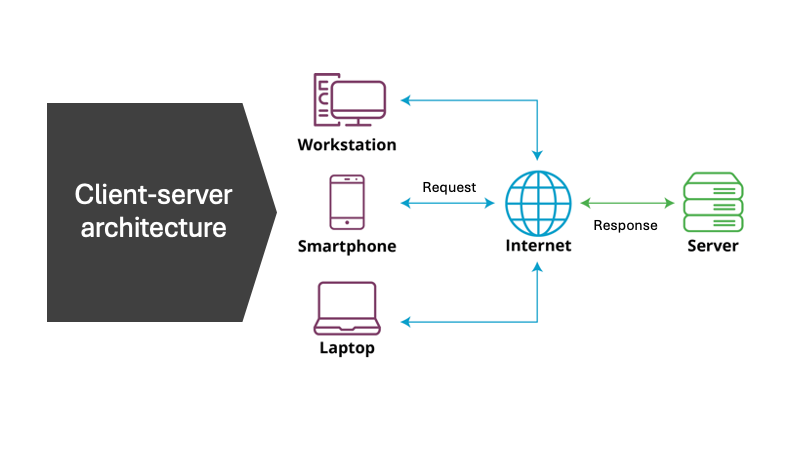

2 System Design
System design is the process of defining the architecture, components, modules, interfaces, and data for a system to satisfy specified requirements. It is a multi-disciplinary field that involves a wide range of skills and knowledge, including software engineering, computer science, network engineering, and project management. System design is an essential part of the software development process, as it provides a blueprint for the construction, deployment, and maintenance of a system. In this section, we will discuss the key aspects of system design, including the requirements analysis, architecturing, scaling, and deployment of a system.
2.1 Definig your system requirements
This is the first step in the system design process, and it involves gathering, analyzing, and documenting the requirements for the system. The requirements analysis phase is crucial, as it provides the foundation for the rest of the system design process. It helps to ensure that the system will meet the needs of its users and stakeholders, and that it will be developed within the constraints of time, budget, and resources. The requirements analysis phase typically involves the following activities:
Gathering Requirements: This involves collecting information about the needs, goals, and constraints of the system from its users and stakeholders. This information can be gathered through interviews, surveys, questionnaires, and workshops.
Analyzing Requirements: This involves analyzing the gathered information to identify the key features, functions, and constraints of the system. It also involves identifying any conflicts or inconsistencies in the requirements.
Documenting Requirements: This involves documenting the requirements in a clear, concise, and unambiguous manner. The requirements should be documented in a way that is understandable to all stakeholders, including developers, testers, and project managers.
Validating Requirements: This involves validating the requirements with the users and stakeholders to ensure that they accurately reflect their needs and goals. It also involves ensuring that the requirements are complete, consistent, and feasible.
Managing Requirements: This involves managing changes to the requirements throughout the system design process. It involves tracking changes, resolving conflicts, and ensuring that the requirements are kept up-to-date.
2.2 Types of Requirements
There are several types of requirements that need to be considered when designing a system. These include:
Functional Requirements: These are the requirements that describe the functions, features, and capabilities of the system. They specify what the system should do, and they are typically expressed as use cases, user stories, or functional specifications.
Non-Functional Requirements: These are the requirements that describe the quality attributes of the system, such as performance, reliability, availability, security, and usability. They specify how well the system should perform, and they are typically expressed as performance requirements, security requirements, and usability requirements.
Business Requirements: These are the requirements that describe the business goals, objectives, and constraints of the system. They specify why the system is being developed, and they are typically expressed as business cases, business rules, and business process models.
User Requirements: These are the requirements that describe the needs, goals, and constraints of the users of the system. They specify who will use the system, and they are typically expressed as user profiles, user scenarios, and user interface designs.
System Requirements: These are the requirements that describe the technical constraints and dependencies of the system. They specify how the system will be developed, deployed, and maintained, and they are typically expressed as system architecture, system interfaces, and system dependencies.
Regulatory Requirements: These are the requirements that describe the legal, ethical, and regulatory constraints of the system. They specify how the system should comply with laws, regulations, and standards, and they are typically expressed as compliance requirements, privacy requirements, and security requirements.
Once we have gathered, analyzed, and documented the requirements for the system, we can move on to the next phase of the system design process, which is architecturing the system.
2.3 Architecturing your system
Architecturing a system is the act of decomposing a system into multiple building blocks so that we can identify how each building block can be developed, deployed, and maintained independently to achieve a high level of modularity, flexibility, and scalability. The architecture of a system provides a high-level view of how these components are arranged and interact with each other in order to achieve the desired functionality and performance.It also provides a blueprint for the system, which can be used to guide its development and maintenance. There are several architectural styles and patterns that can be used to design a system, such as the client-server architecture, the microservices architecture, and the event-driven architecture. In this section we will discuss some of the most common and we will get into some of the aspects of the implementation.
2.3.1 Client-Server Architecture
The client-server architecture is a distributed computing architecture that segregates the system into two major components: the server and the client. The server provides resources and services to the client, and the client requests resources and services from the server. This architecture is widely used in networked systems, where the client and server are connected to each other through a network. Some examples of client-server systems include web applications, mobile apps, and database systems.

2.3.1.1 Components of Client-Server Architecture
The client-server architecture consists of the following components:
Client: The client is a device or a program that requests resources and services from the server. The client can be a web browser, a mobile app, or a desktop application.
Server: The server is a device or a program that provides resources and services to the client. The server can be a web server, an application server, or a database server.
Network: The network is the medium through which the client and server communicate with each other. The network can be a local area network (LAN), a wide area network (WAN), or the internet.
Protocol: The protocol is a set of rules and conventions that govern the communication between the client and server. The protocol can be HTTP, HTTPS, TCP, or UDP.
2.4 Developing your system
The process of developing a system involves the selection of the appropriate technologies, tools, and frameworks to implement the system. It also involves the design and development of the system components, such as the user interface, the business logic, and the data storage. Having defined a clear architecture, the development process can be more efficient and effective. The development of a system can be a complex and time-consuming process, and it requires careful planning and coordination. There are several development methodologies that can be used to develop a system, such as the waterfall model, the agile model, and the iterative model. In this section, we will discuss some of the key aspects of the development process, including the development methodologies, the development tools, and the development best practices.
2.4.1 Software Development Methodologies
There are several software development methodologies that can be used to develop a system, such as the waterfall model, the agile model, and the iterative model. Each of these methodologies has its own strengths and weaknesses, and they are suitable for different types of projects and teams.
Waterfall Model: The waterfall model is a linear and sequential software development methodology that divides the development process into distinct phases, such as requirements analysis, design, implementation, testing, and maintenance. Each phase must be completed before the next phase can begin, and the process is difficult to change once it has started. The waterfall model is suitable for projects with well-defined requirements and stable technologies, but it is not suitable for projects with changing requirements and emerging technologies.
Agile Model: The agile model is an iterative and incremental software development methodology that focuses on delivering working software in short iterations, typically two to four weeks. It emphasizes collaboration, flexibility, and customer feedback, and it is suitable for projects with changing requirements and emerging technologies. The agile model is based on the principles of the Agile Manifesto, which emphasizes individuals and interactions, working software, customer collaboration, and responding to change.
Iterative Model: The iterative model is a software development methodology that divides the development process into small, incremental, and iterative cycles, each of which produces a working prototype of the system. The iterative model is suitable for projects with evolving requirements and complex technologies, and it is based on the principles of the spiral model, which emphasizes risk management, prototyping, and incremental development.
2.5 Deploying your system
Once the system has been designed and developed, it needs to be deployed to a production environment so that it can be used by its users. The deployment of a system involves the installation, configuration, and testing of the system in a production environment. It also involves the migration of data and the training of users. The deployment of a system can be a complex and time-consuming process, and it requires careful planning and coordination. There are several deployment strategies that can be used to deploy a system, such as the big bang deployment, the phased deployment, and the rolling deployment. In this section, we will discuss some of the key aspects of the deployment process, including the deployment strategies, the deployment tools, and the deployment best practices.
2.6 Scaling your system
Scability describes the ability of a system to handle an increasing amount of work without compromising its performance, reliability, and availability.It also related with the system elasticity, which is the ability of a system to adapt to changes in the workload by adding (scalling-up) or removing (scalling out) resources. Systems can be scaled in two ways: vertically and horizontally.
2.6.1 Horizontal Scaling (Scaling Out/In)
Horizontal scaling involves adding more machines or nodes to a pool of resources to manage increased load. It’s like adding more lanes to a highway to accommodate more traffic. This approach is common in distributed systems, such as cloud computing environments, where you can add more instances or servers to handle more requests.
Advantages:
Scalability: It’s easier to scale applications indefinitely by simply adding more machines into the existing infrastructure.
Flexibility: You can scale the system up or down by adding or removing resources as demand changes, often automatically.
Fault Tolerance: Horizontal scaling can improve the reliability and availability of a system. If one node fails, others can take over, reducing the risk of system downtime.
Disadvantages:
Complexity: Managing a distributed system with many nodes can be more complex, requiring sophisticated software and tools for load balancing, distributed data management, and failover mechanisms.
Data Consistency: Ensuring data consistency across nodes can be challenging, especially in databases or systems requiring real-time synchronization.
2.6.2 Vertical Scaling (Scaling Up/Down)
Vertical scaling involves increasing the capacity of an existing machine or node by adding more resources to it, such as CPU, RAM, or storage. It’s akin to upgrading the engine in a car to achieve higher performance.
Advantages:
Simplicity: It is often simpler to implement as it may require just upgrading existing hardware. It doesn’t involve the complexity of managing multiple nodes.
Immediate Performance Boost: Upgrading hardware can provide an immediate improvement in performance for applications that can utilize the extra resources.
Disadvantages:
Limited Scalability: There is a physical limit to how much you can upgrade a single machine, and eventually, you might hit the maximum capacity of what a single server can handle.
Downtime: Upgrading hardware might require downtime, which can be a significant drawback for systems that require high availability.
Cost: Beyond certain points, vertical scaling can become prohibitively expensive as high-end hardware components can cost significantly more.
The choice between horizontal and vertical scaling depends on the specific requirements, architecture, and constraints of the system in question. Horizontal scaling is favored for applications designed for cloud environments and those requiring high availability and scalability. Vertical scaling might be chosen for applications with less demand for scalability or where simplicity and immediate performance improvement are prioritized. Often, a hybrid approach is used, combining both strategies to leverage the advantages of each.
Scaling your system is something you can control,and plan ahead with the support of your infrastructure team. However, doing this manually is rather time-consuming, especially when the increased load only sustains for a short period of time. In other words, you’re always too late. This is where autoscaling comes in, by automatically scaling either horizontally or vertically when the current incoming load requires it.
2.6.3 Autoscaling
Auto-scaling, or automatic scaling, is a technique that dynamically adjusts the amount of computational resources in a server farm or a cloud environment based on the current demand. It is closely related to both horizontal and vertical scaling, but it primarily leverages horizontal scaling due to its flexibility and the ease with which resources can be added or removed in cloud-based environments. I encorage you to check the next video to understand how Kubernetes relies on autoscaling to manage the resources of your system in cloud or on-premises environments.